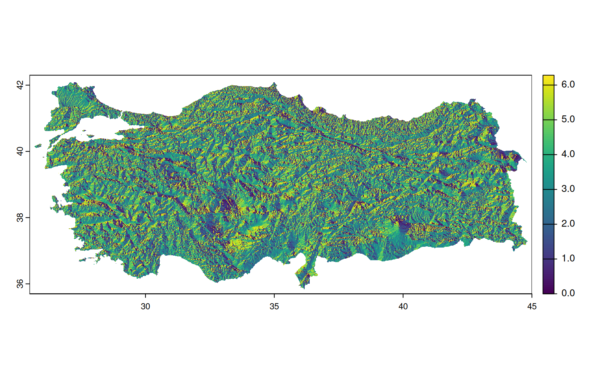
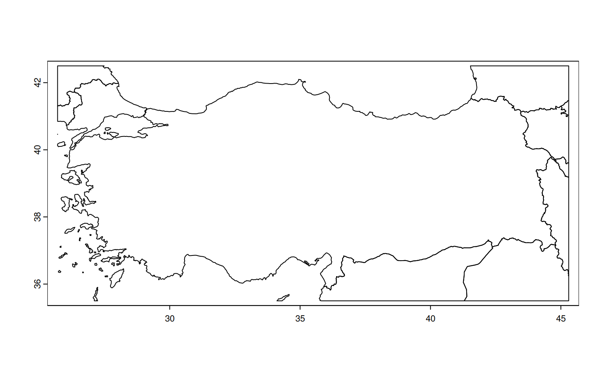
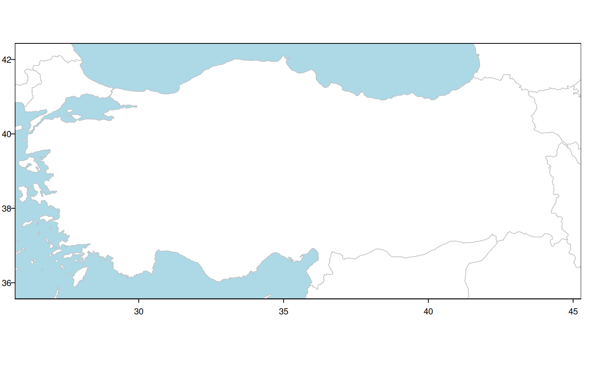
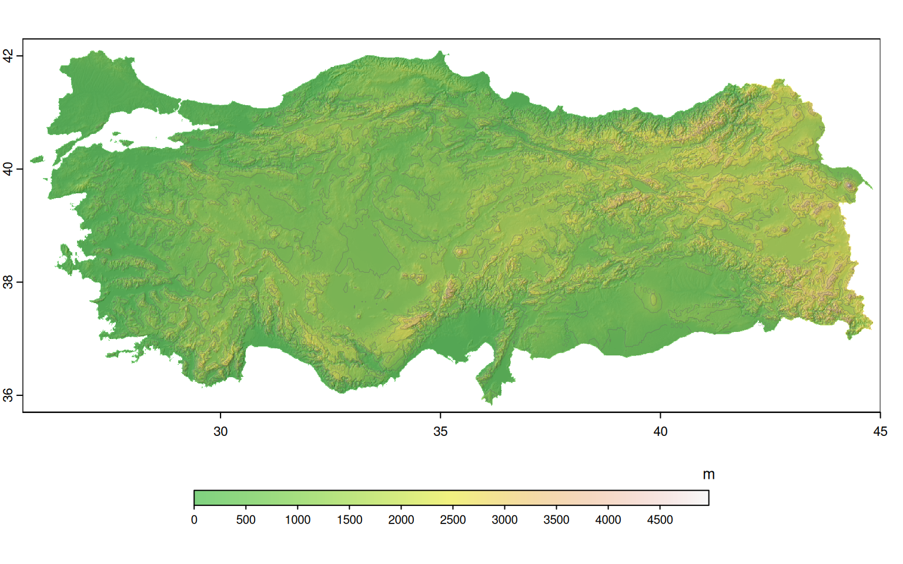

# paketleri R'a yukle
libs <- c(
"terra", # mekansal raster ve vektor verileri islemek icin, {raster}'in halefi
"geodata" # bazi mekansal verilere erismek icin
)
sapply(libs, require, character.only = TRUE) terra geodata
TRUE TRUE Merhabalar, blogun üçüncü yazısına hoş geldiniz. Takıldığınız ve anlamadığınız yerler olursa lütfen yorum yapmaya çekinmeyiniz. Ayrıca katkılarınızı ve eleştirilerinizi de bekliyorum. Keyifli okumalar.
Blogdaki son yazımın üzerinden neredeyse 15 ay geçti. Bu “kısacık” zamana nişan, evlilik ve tezi -özellikle de tezi- sıkıştırınca başımı kaşıyacak vakit bile bulamadım. Ardından da esiri olduğum mükemmelliyetçilik eklenince bu yazının çıkışı bugünü buldu. Yani anlayacağınız yine bahanelerim var. :)
Bir önceki yazıyı okuyanlar hatırlayacaktır; DEM verisinden eğim ve bakı hesaplamış, kara akbaba gözlem noktalarındaki değerleri çekmiş ve görselleştirmiştik. Bu yazıda ise R kullanarak DEM verisini nasıl indirebileceğimizi göreceğiz. Ardından da base R kullanarak görselleştirmeler yapacağız.
Bu yazı, öncekilerden daha kısa ve öz olacak.
Hangi paketleri kullanacağımıza geçmeden önce size R programlama konusunda geçirdiğim zihinsel değişimden bahsetmek istiyorum. R öğrenmeye başladığımda -olması gerektiği gibi- ilk olarak R programlamanın temellerini öğrenmiş, ardından R ile veri analizine geçmiştim. Sonrasında arkadaşım ve saygıdeğer hocam İsmail’in (kendisi benim ilk R hocam ve yardımcı tez danışmanım oluyor) önerileriyle tidyverse kullanmaya başladım. tidyverse, daha önceki yazılarda da bahsettiğim gibi, veri işlerini standartlaştıran bir paket koleksiyonu. İçerisinde düzenli veri - tidy data prensiplerine dayanan, R ile veri işlemeyi standart ve daha kolay bir hâle getiren ggplot2, dplyr, readr, tidyr, tibble gibi çok sayıda paket bulunuyor. O günden bugüne işlerimin büyük bir kısmında bu paketleri kullandım. Bu süreç, veri analizi konusunda bana çok şey öğretti; düzenli veri prensiplerini, onları uygulamayı ve R’ın en popüler paketlerinden tidyverse’yi öğrendim. Geçtiğimiz ocak ayında ise programlama konusundaki fikirlerimde bazı değişiklikler oldu ve büyük oranda base R kullanmaya başladım. Bu kararı, tidyverse’nin kötü, yetersiz bir paket olduğunu düşündüğüm için almadım. Kendileri veri işlemede büyük kolaylıklar sağlayan, işlevsel bir paket. Mesela ggplot2’nin yeri kolay kolay doldurulamaz. Ancak R, hâlihazırda veri analizi ve istatistik için geliştirilmiş bir dil ve bu işler için yerli olan çok sayıda araç barındırıyor. base R kullanarak hiçbir bağımlılık, hiçbir yeni paket gerekmeden birçok işinizi kolaylıkla görebilirsiniz. Ağırlıkla C ve Fortran gibi dillerle yazılmış olan base R fonksiyonları doğru kullanıldığında ışık hızında çalışabiliyor. Ta ki tekrarlanan işler için döngüler ya da apply() gibi fonksiyonlar kullanana kadar. Ben de olabildiğince daha az bağımlıkla çalışmak, R’ın yerli gücünden yararlanmak ve analizin yanı sıra programlamaya da ağırlık vermek amacıyla çoğunlukla base R kullanmaya başladım. Yanlış anlaşılmasın, paket kullanmaya ya da tidyverse’ye karşı değilim. Sadece base R ile kolaylıkla yapabileceğim şeyler için neden paket kullanayım? Eğer base R yeterince etkili bir seçenek değilse diğer paketlerden yararlanırım.
Neyse sözü fazla uzattım. Şimdi bu iş için kullanacağımız paketleri yükleyebiliriz. Eğer bilgisayarınızda yüklü olmayan bir paket varsa install.packages() fonksiyonunu kullanarak yükleyebilirsiniz. Bu yazı için toplamda iki paket kullanacağız: terra ve geodata. Ben mekânsal vektör işlerinde genellikle sf paktini kullanıyorum ancak bu sefer hem vektör hem de raster veriler için terra paketini kullanacağız. Mülki idare sınırları ve sayısal yükseklik modellerine erişmek için de geodata paketini kullanacağız. Bu paket de raster, terra, dismo gibi birçok önemli R paketini yazan Robert Hijmans’ın yazdığı bir paket.
# paketleri R'a yukle
libs <- c(
"terra", # mekansal raster ve vektor verileri islemek icin, {raster}'in halefi
"geodata" # bazi mekansal verilere erismek icin
)
sapply(libs, require, character.only = TRUE) terra geodata
TRUE TRUE DEM verisinden önceki yazıda kısaca bahsetmiştim. Tekrardan hatırlamakta fayda var. DEM (Digital Elevation Model), kısaca, yeryüzünün yükseklik bilgisini sayısal olarak temsil eden modele verilen isim. Her bir grid için, sahip olduğu yükseklik verisini barındıran bu veri, topografik ve hidrolojik birçok analizde sıklıkla kullanılıyor.
Bu yazıda SRTM verisini, geodata paketini kullanarak indireceğiz. Bu paket ile, GADM, SRTM, Worldclim, OSM gibi birçok farklı veriyi kolaylıkla indirebiliriz.
Öncelikle paketin içerdiği fonksiyonlara bir bakalım.
ls("package:geodata") [1] "bio_oracle" "cmip6_tile" "cmip6_world"
[4] "country_codes" "crop_calendar_sacks" "crop_monfreda"
[7] "crop_spam" "cropland" "elevation_30s"
[10] "elevation_3s" "elevation_global" "footprint"
[13] "gadm" "geodata_path" "landcover"
[16] "monfredaCrops" "osm" "population"
[19] "rice_calendar" "sacksCrops" "soil_af"
[22] "soil_af_elements" "soil_af_isda" "soil_af_water"
[25] "soil_world" "soil_world_vsi" "sp_genus"
[28] "sp_occurrence" "sp_occurrence_split" "spamCrops"
[31] "travel_time" "world" "worldclim_country"
[34] "worldclim_global" "worldclim_tile" Bizim işimize yarayacak fonkiyon elevation_30s(). Ülke kodu için country argümanını, DEM verisinin Türkiye sınırlarına göre maskelemek için mask argümanını ve veriyi kaydeceğimiz yer için ise path argümanını kullanıyoruz. Ben tempfile() fonksiyonu ile geçici bir dosya oluşturdum. Dilerseniz yereldeki herhangi bir dizine de kaydedebilirsiniz.
dem <- elevation_30s(country = "TUR", mask = TRUE, path = tempfile())
demclass : SpatRaster
dimensions : 792, 2340, 1 (nrow, ncol, nlyr)
resolution : 0.008333333, 0.008333333 (x, y)
extent : 25.5, 45, 35.7, 42.3 (xmin, xmax, ymin, ymax)
coord. ref. : lon/lat WGS 84 (EPSG:4326)
source : TUR_elv_msk.tif
name : TUR_elv_msk
min value : -42
max value : 4972 nrow(dem) * ncol(dem)[1] 1853280Verinin çıktısında birçok temel bilgiye erişebiliriz. Gördüğünüz gibi veri SpatRaster sınıfında; satır sayısı 792, sütun sayısı 2340 olan, toplamda 1853280 hücreden oluşuyor. Çözünürlüğü 0.008333333 derece, yani yaklaşık 1 km diyebiliriz. Verinin extent’i Türkiye sınırlarını kapsıyor. Minimum değer -42 m, iken maksimum değer 4972 m. Yaklaşık 1 km çözünürlüğe sahip olduğunu düşündüğümüzde neredeyse Ağrı Dağı’nın 5137 metrelik rakımını yakalıyormuş. Gayet iyi.
Verinin minimum değeri -42 metreden başladığı için reclassify etmek istiyorum. 0’dan küçük olan tüm değerleri 0’a eşitleyeceğim. Bunu terra paketi içindeki classify() fonksiyonu ile yapabiliriz.
dem <- classify(
dem,
rcl = matrix(c(-Inf, 0, 0), ncol = 3, byrow = TRUE)
)
demclass : SpatRaster
dimensions : 792, 2340, 1 (nrow, ncol, nlyr)
resolution : 0.008333333, 0.008333333 (x, y)
extent : 25.5, 45, 35.7, 42.3 (xmin, xmax, ymin, ymax)
coord. ref. : lon/lat WGS 84 (EPSG:4326)
source(s) : memory
varname : TUR_elv_msk
name : TUR_elv_msk
min value : 0
max value : 4972 Gördüğünüz gibi minimum değer artık 0’dan başlıyor.
Şimdi basitçe görselleştirelim.
plot(dem)Bu hâliyle bile çok güzel görünüyor.
Şimdi de eğim, bakı ve hillshade’i hesaplıyoruz.
slp <- terrain(dem, "slope", unit = "radian")
asp <- terrain(dem, "aspect", unit = "radian")
hillshade <- shade(
slp,
asp,
angle = 45,
direction = 300,
normalize = TRUE
)Bir bakalım nasıl görünüyorlar. Çoğu durumda plot(data) yeterince iyi sonuç veriyor ancak daha yüksek çözünürlüklü bir görüntü için maxcell argümanını değiştireceğim. İşlem biraz yavaşlayabilir.
plot(slp, maxcell = prod(dim(slp))) # sutun ve satir sayisini carpip hucre sayisini hesapliyorumplot(asp, maxcell = prod(dim(asp)))
plot(hillshade, maxcell = prod(dim(hillshade)), col = grey(0:100/100))
Şimdi de mülki idare sınırları için GADM verilerini çekelim. GADM, Türkiye için sınır çözünürlüğü yüksek olan bir veri değil ancak yüksek sınır doğruluğu gerekmeyen işler için gayet kullanışlı. Tüm dünya verisini çekip, Türkiye’nin ve komşuların bir kısmının extent’inin koordinatlarına göre kırpıyoruz.
adm <- world(resolution = 1, path = tempfile())
ext <- vect(ext(c(25.7, 45.3, 35.5, 42.5)), crs = "EPSG:4326")
adm <- crop(adm, ext)
adm class : SpatVector
geometry : polygons
dimensions : 10, 2 (geometries, attributes)
extent : 25.7, 45.3, 35.5, 42.5 (xmin, xmax, ymin, ymax)
coord. ref. : +proj=longlat +datum=WGS84 +no_defs
names : GID_0 NAME_0
type : <chr> <chr>
values : ARM Armenia
AZE Azerbaijan
BGR Bulgariaplot(adm)
Şimdi güzel bir harita oluşturalım. Yazının en karmaşık kısmı nuhtemelen burası olacak. Daha önceki yazılarda, R’da grafikler için oldukça standart bir iş akışı sağlayan ggplot2 paketini kullanarak haritalar çizmiştik. Bu sefer ise base R kullanacağız. base R ile grafik çizdiğimiz zaman ilkin gözümüze yeterince iyi gelmeyebilir ancak biraz tecrübe kazandığımızda ne kadar esnek ve işlevsel olduğunu görebiliriz. ggplot2 kadar standart, karmaşık grafiklerde onun kadar kolay bir iş akışı sunmuyor ancak düşünüldüğü kadar zor değil ve çok daha esnek bir yapıya sahip. Neredeyse dilediğimiz hemen her şeyi çizebiliriz. Bazen çok az satırla bile süper işler çıkabiliyor. Bu aşamada yanlış ya da eksik yaptığım şeyler olursa yorum yapmaktan çekinmeyin lütfen.
Öncelikle Türkiye ve çevre ülkelerin sınırlarının olduğu bir altlık harita çizelim.
plot(
adm, # veri
lwd = 0.8, # cizgi kalinligi
xlim = c(26.1, 44.9), # x eksinin sinirladigimiz aralik
ylim = c(35.7, 42.3), # y eksinin sinirladigimiz aralik
border = "grey", # poligon sinirlarinin rengi
background = "lightblue", # deniz alanlarinin rengi
col = "white", # kara alanlarinin rengi
axes = TRUE, # eksenleri cizmek icin
mar = c(2, 1, 0, 1), # plot'un marginlerini belirtiyor (alt, sol, ust, sag)
las = 1 # en cok gozden kacan nokta, y eksenininin etiketlerini yatay yapiyor
)
Şimdi de kabartmasıyla ve konturlarıyla beraber topografik haritamızı çizelim.
plot(
hillshade,
col = grey(0:100 / 100),
mar = c(5, 1, 0, 1),
maxcell = prod(dim(hillshade)),
legend = FALSE # rakimin lejantini cizmek icin burada cizmiyoruz
)
plot(
dem,
col = terrain.colors(255),
alpha = 0.5,
maxcell = prod(dim(dem)),
add = TRUE, # ilk plot'un uzerine cizebilmek icin
legend = TRUE,
plg = list( # terra::plot'ta lejant ayarlari icin
loc = "bottom", # lejanti asagiya ciz
size = c(0.6, 0.7), # lejant boyutu
cex = 0.8, # yazi boyutu
at = seq(0, 4500, 500), # lejant etiketleri
tic = "out", # lejanttaki cizgilerin pozisyonu
title = "m", # baslik
title.cex = 0.8 # baslik boyutu
)
)
contour(
dem,
lwd = 0.35,
labcex = 0.38, # label boyutu
col = scales::alpha("grey40", 0.7),
add = TRUE
)
Şimdi de iki haritayı birleştirelim. Ancak bu sefer konturu çizmeyeceğim.
plot.new() # yeni bir plot baslatmak icin
par(family = "OpenSans") # font
plot(
adm,
lwd = 0.8,
xlim = c(26.1, 44.9),
ylim = c(35.7, 42.3),
border = "grey",
background = "lightblue",
col = "white",
mar = c(5, 1, 0, 1),
axes = TRUE,
las = 1
)
plot(
hillshade,
col = grey(0:100/100),
maxcell = prod(dim(hillshade)),
legend = FALSE,
add = TRUE
)
plot(
dem,
col = terrain.colors(255),
alpha = 0.5,
maxcell = prod(dim(dem)),
add = TRUE,
legend = TRUE,
plg = list(
loc = "bottom",
size = c(0.6, 0.7),
cex = 0.8,
at = seq(0, 4500, 500),
tic = "out",
title = "Rakım [m]",
title.cex = 0.8
)
)
plot(adm, border = "grey", lwd = 0.8, add = TRUE) # sinirlari vurgulu cizmek icin tekrar ekledim
Fena olmadı. :) Biraz daha uğraşla daha iyi haritalar elde edilebilir. Özellikle de göl ve nehir katmanları eklenirse güzel olacaktır.
Şimdi de Türkiye rakımının dağılımına bir bakalım. Bunun için histogram çizeceğim.
plot.new()
par(
mar = c(5, 5, 1, 1),
mgp = c(3.6, 1, 0), # etiket uzakligini ayarliyoruz
las = 1,
family = "OpenSans",
bty = "l", # box'ın tipini L seklinde yapmak icin
cex.lab = 1.3,
xpd = NA # etiketi grafik sinirlari disina tasimaya izin verir
)
hist(
dem,
xlab = "Rakım [m]", # x ekseninin etiketi
ylab = "Sıklık", # y ekseninin etiketi
main = "", # baslik icin. "" bos yaparak basligi cizmiyorum
col = "orange",
breaks = seq(0, 4972, 100), # grafigin kirilimlari
density = 50 # kutularin icindeki tarama cizgisinin yogunlugu
)
axis( # x eksenindeki kucuk tikleri cizmek icin
side = 1, # alttaki x eksenine cizmek icin
at = seq(0, 4972, 100), # kirilimlar
tck = -0.030 / 4, # tik boyutu kucuk olsun
labels = FALSE # etiket olmamasi icin
)
box() # eksenlere kutu cizmek icinGrafik, sağa çarpık bir dağılım sergiliyor. Ortalama rakımın 1132 metre olduğu Türkiye’yi iyi temsil eden bir grafik oldu.
Bir sonraki yazıda görüşürüz.
Bilimle ve huzurla kalınız!